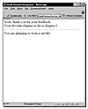
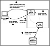
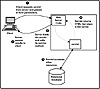

| |
|
|||||
         |
|
|
Here is what a CGI program written in Perl might look like:
#!/usr/bin/perl
require “cgilib.pl”;
print “Content-type: text/html\n\n”;
%dataDict = ();
&readData(*data);
&parseData(*data,*dataDict);
$fName = $dataDict{“fname”};
$chp = $dataDict{“favchap”};
$writeServlet = $dataDict{“writeservlet”};
print “<HTML>”;
print “<TITLE>Book Review Response</TITLE>”;
print $fName;
print “, thank you for your feedback.<BR>”;
print “Your favorite chapter so far is chapter ”;
print $chp;
print “.<BR>”;
print “<HR>”;
print “You are ”;
($writeServlet ne “”) || print “not ”;
print “planning to write a servlet.”;
print “</HTML>”;


Although the code for these programs may look complex, it is actually quite simple. A Web client sends a set of key-value pairs to the Web server, which forwards the data to the script named in the <FORM> tag. The CGI program processes these values and writes HTML or other information back to the Web server. In the middle of this process, the CGI program may write to a log file or access a database or other server resource. Figure 6.3 illustrates what this three-tier architecture looks like. Processing Forms with ServletsWhen Java came on the scene, applets allowed Web browsers to display even more sophisticated user interfaces in a platform-independent way. Just as applets extend the capabilities of a Web browser, servlets extend the capabilities of Web servers. Servlets can be used as replacements for CGI programs or as plug-ins within JavaSoft’s JavaWeb Server and other Web servers supporting the Servlet API.
Like most Java technologies, servlets are portable and should work on any “servlet-enabled” server. Because the servlet API is a standard, any server that supports servlets should support your servlet. This is a huge advantage over CGI and other server-side technologies. As more and more servers support servlets, the decision of which server you use will not affect the design and implementation decisions you make for building your enterprise application’s server logic. In CGI programming, a server sends a request to a CGI program, which starts up, processes the request, and shuts down. Because the CGI program doesn’t remain “open” between requests, resources it uses, such as database connections, must be reestablished between calls. This is a performance bottleneck and often requires more complex programming logic to work around. Unlike CGI programs, servlets are persistent. A database connection created in a servlet can remain open between server requests, greatly enhancing performance. Both servlets and CGI can be used to write small applications that perform specific tasks. One advantage of CGI is that CGI scripts can be written in almost any language. The disadvantage of CGI is that each time the server needs the services of one of your CGI programs, it must start up a new CGI process. This process has no persistent state unless you write the logic for storing it. For example, if you wanted to keep track of the last credit card processed, you would need to write it to a file or a database of some sort. This means every time a request is made of your CGI program, the Web server must start an instance of your program, then the program must load its state from a file, database, and so on. Also, CGI does not manage the communication between multiple instances of the CGI program, so if multiple clients are accessing your Web server and requesting the CGI, multiple instances of the CGI program must be loaded, taking up memory. These multiple instances will not share state, so you will have to write specific code if you want them to communicate. In other words, CGI programs are represented by multiple single-threaded applications by default. This is one reason that servlets are a good choice for Web server application programming. They do not have these limitations. Servlets are loaded into the server’s address space at load time or at the time of the initial request. After the initial request, they respond very quickly. Also, because the servlet can remain resident, it can maintain state between client requests. Figure 6.4 illustrates typical servlet use. Creating a ServletIn order to create servlets, use the Java Servlet Development Kit, or JSDK, from Sun. The JSDK consists of two packages: javax.servlet and javax.servlet.HTTP. These packages contain the classes and interfaces needed to create your own servlets. Your Web server might also provide a copy of these packages; if so, you don’t have to download this kit. JSDK 2.0 is found on your CD-ROM or it can be downloaded from http://java.sun.com/products/java-server/servlets/index.html. After installing the JSDK, you can begin creating servlets. 
The following discussion provides a brief overview of the major concepts in creating servlets. Chapter 7, “Programming Servlets,” covers these concepts in detail and provides a number of demonstrations. GenericServlet Remember, when you create an applet, you typically subclass java.applet.Applet. With servlets that aren’t specifically used for HTTP processing, you subclass javax.servlet.GenericServlet and override several methods. Typically, you will override init(), which performs any initialization your servlet requires, such as initializing logs, opening database connections, and so on. You will also usually override service(), which is called each time your servlet is invoked. When this method is called, it is passed a javax.servlet.ServletRequest and javax.servlet.ServletResponse object, used to process the client request. HTTPServlet If your servlet will be used primarily for processing HTTP requests, subclass javax.servlet.HTTP.HTTPServlet. This abstract subclass of GenericServlet implements a default service() method for processing requests. It calls several other methods that you typically override to handle the request. The most common methods to override include doGet() and doPost(). For example, the method doGet() is called when the form requests are sent in GET, HEAD, or POST format. Each of these request types corresponds to a standard HTTP request mechanism and is passed objects that represent the request and the response. The two most common request types are GET and POST. A GET request sends information to a servlet using a URL. The results of the GET request should be the contents of the URL. The URL can contain extra data in the form of a query string appended to it with a question mark. For example, the URL www.pri.com/servlets/go?name=stephen passes the key-value pair name=stephen to a servlet. This key-value string is optional, and most of the requests you make with a browser when clicking on links are actually handled with GET requests to the server that do not contain this query string. POST requests send an HTTP body that contains all of the data being sent to the servlet. Normally, POST requests are used as the action for a form, especially when a lot of data is being sent to the servlet or CGI script.
|
 |
         |
|

){kind=link}
){kind=link}
){kind=link}
){kind=link}
){kind=link}
){kind=link}